Present
Open the deck in a browser. Press S for the speaker view with notes, a timer and the next slide.
Presentations written as HTML, made for AI agents to edit.
One file per slide, a theme in CSS, and Reveal.js to present it. When the talk is over, send the whole deck as one HTML file.
pnpm dlx byeslide init my-deck
A print shop makes a page from separate plates, one per ink. Byeslide keeps a slide's content, theme and runtime apart the same way, so each change lands in one file.
content/01-title.md holds the words and speaker notes. slides/01-title.html puts them on the slide.
Inks, fonts and sizes are CSS custom properties in theme.css. Layout classes live in styles.css.
Reveal.js presents the deck: transitions, fragments, the speaker view and the print view.
byeslide build prints the three in register, as dist/index.html.
A .pptx stores every position as a number. A Byeslide slide stores its words and structure, and the look comes from shared CSS. An agent changes a slide without doing layout arithmetic.
Each slide has a Markdown file in content/ with its words and speaker notes. It says nothing about the look, so anyone on the team can edit it.
content/04-folder.md# A deck is a folder you can read Seven entries, one job each. - `theme.css`, **Design tokens**: fonts, inks and sizes. - `slides/`, **One file per slide**: file names set the order. ## Speaker notes Walk the folder one entry per click.
The agent reads the content file and the closest pattern, then edits one slide file. Skills in .codex/skills/ tell it where to look.
slides/04-folder.html<section class="slide"> <h2 class="heading">A deck is a folder you can read</h2> <ul class="tree"> <li class="fragment">theme.css</li> <li class="fragment">slides/</li> </ul> <aside class="notes">Walk the folder one entry per click.</aside> </section>
byeslide check opens every slide in Chromium and reports text that does not fit, with the file it came from.
$ byeslide check Overflow detected: - slides/09-check.html (#9) axis=y offenders: p $ byeslide check No overflow detected across 14 slides.
byeslide init gives you these 14 slides. Each one presents part of Byeslide and shows a technique you can copy. Open a slide to see it live.
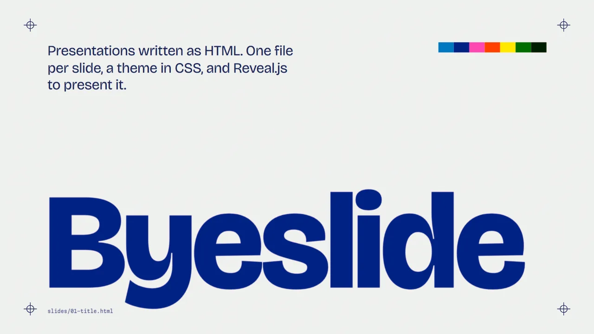
Overprinted title01-title.html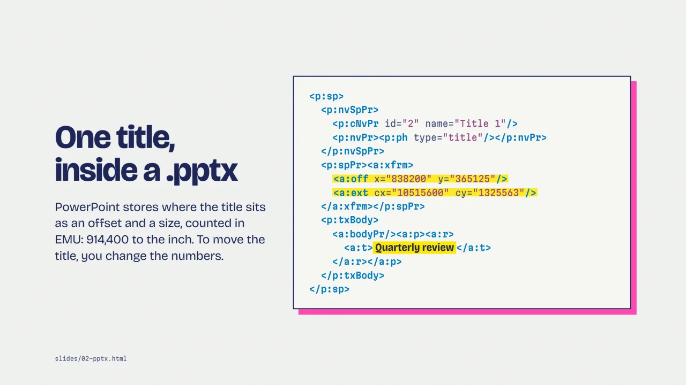
Auto-animate, part one02-pptx.html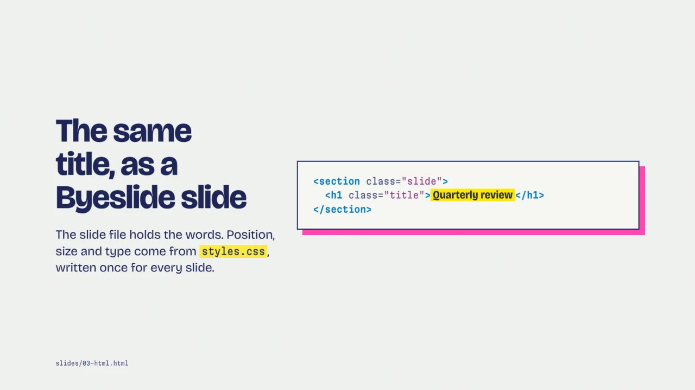
Auto-animate, part two03-html.html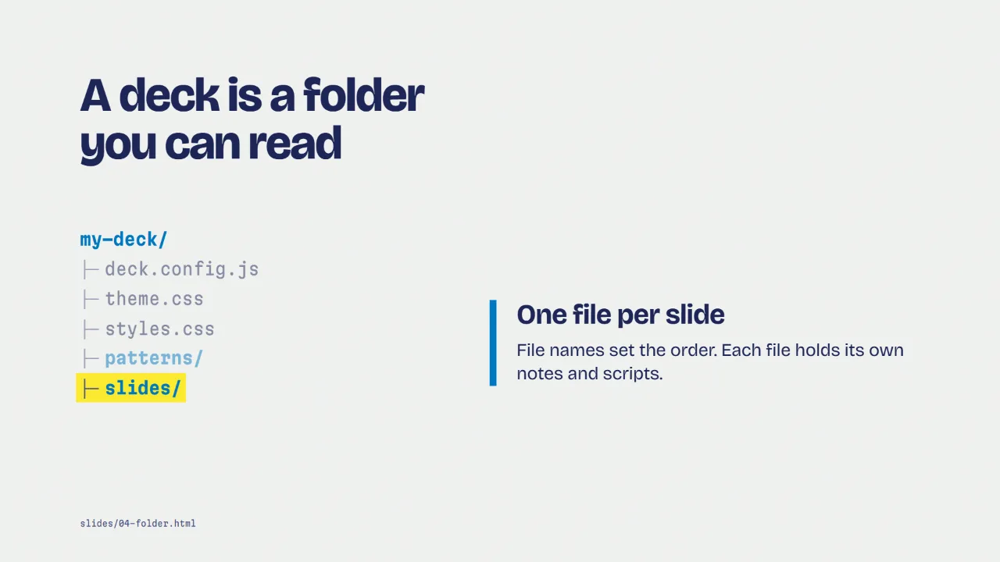
Fragments with callouts04-folder.html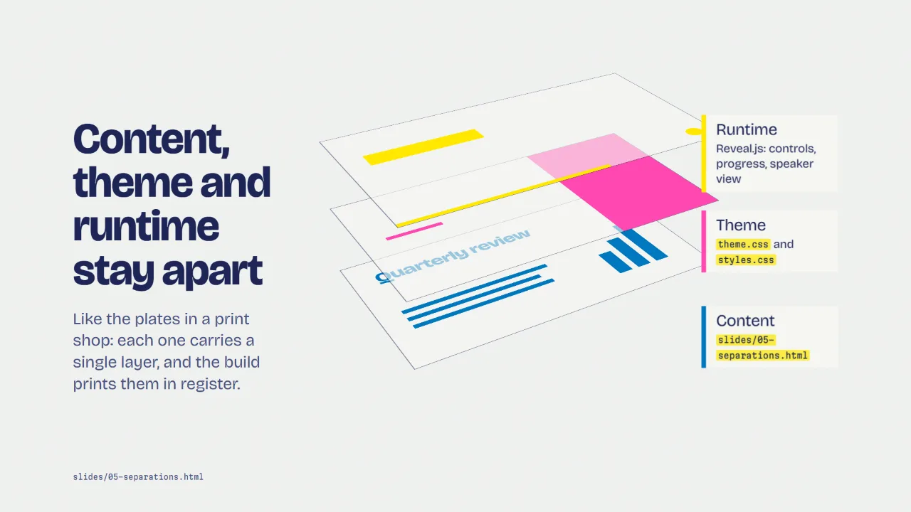
CSS 3D driven by fragments05-separations.html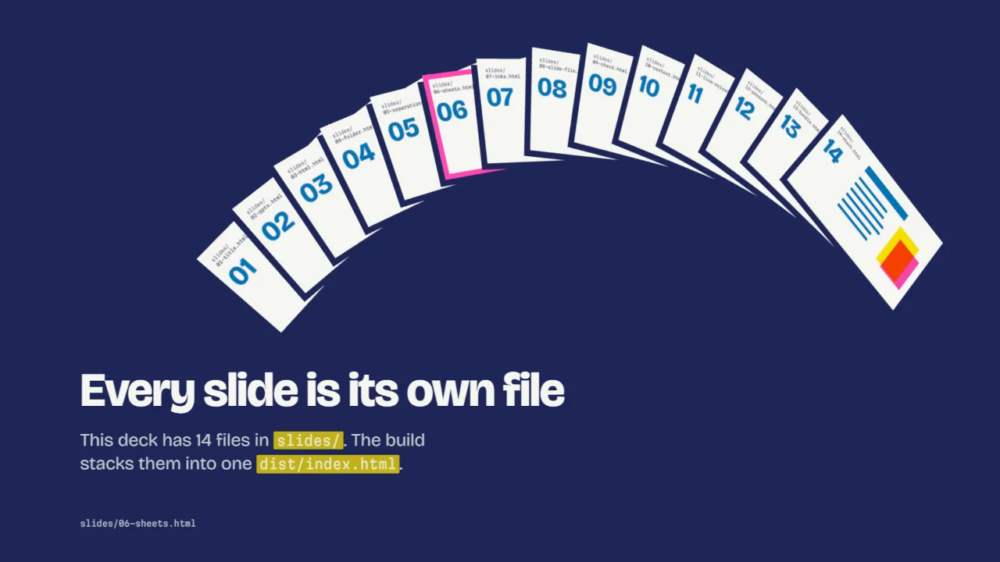
Three.js scene06-sheets.html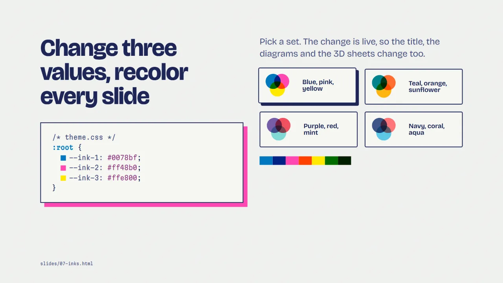
Live theme change07-inks.html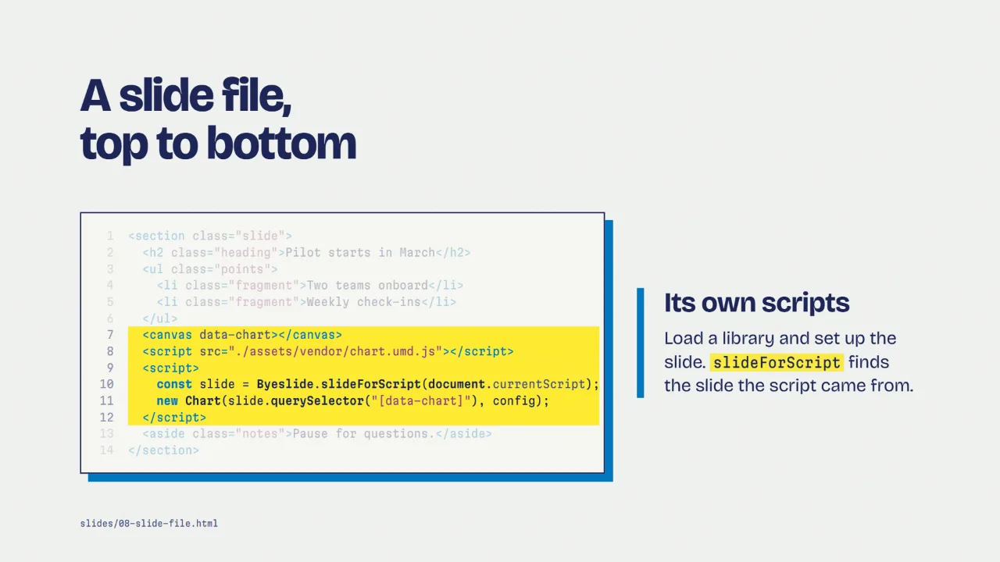
Code walkthrough08-slide-file.html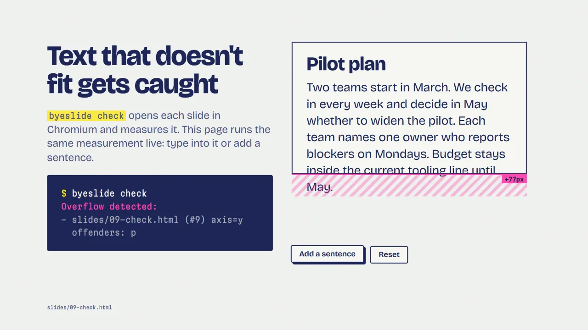
Live overflow check09-check.html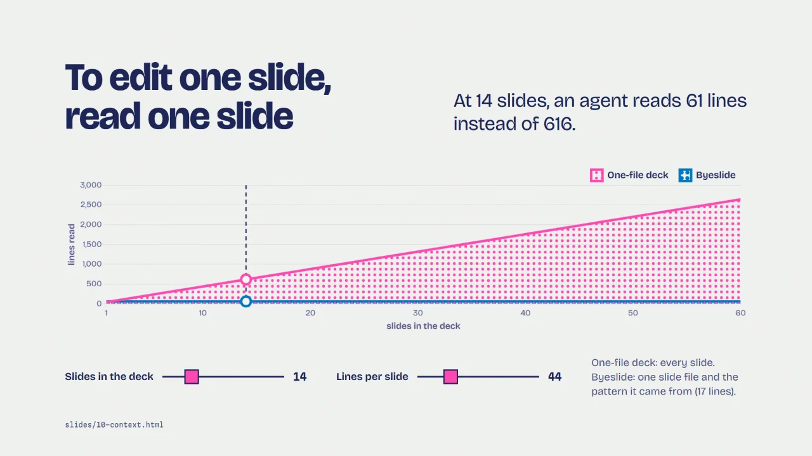
Chart.js with sliders10-context.html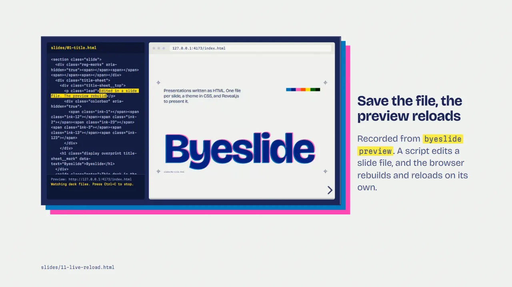
Local video11-live-reload.html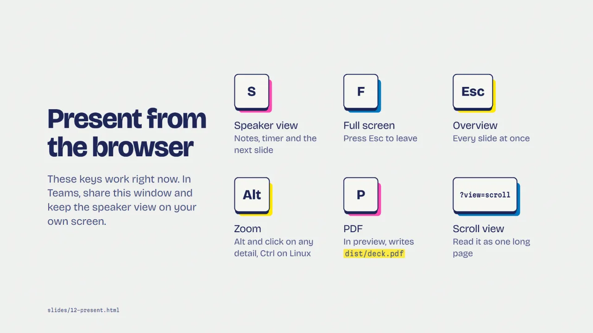
Custom fragment style12-present.html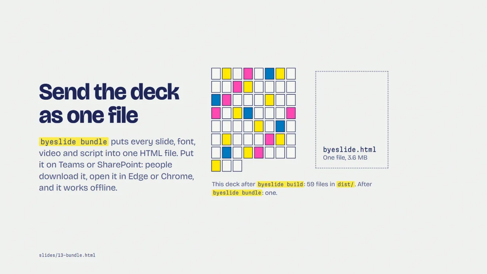
Many elements, one fragment13-bundle.html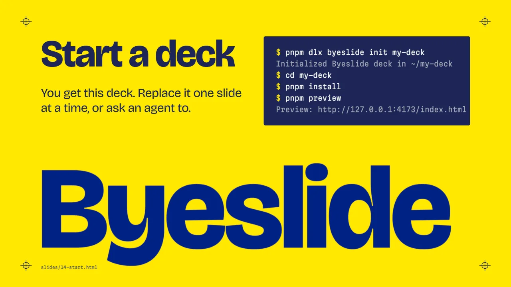
Typed terminal lines14-start.htmlYou get the starter deck. Replace it one slide at a time, or ask an agent to.
Needs Node.js 22 or later and pnpm. Run pnpm install:browsers once before pnpm check or pnpm pdf.
pnpm dlx byeslide init my-deck cd my-deck pnpm install pnpm preview
A deck is a normal folder. You edit the source files. The build writes the presentation to dist/.
my-deck/
deck.config.js title, size, plugins
theme.css design tokens
styles.css layout classes
content/ words and notes, one Markdown file per slide
patterns/ example slides to copy
slides/ one HTML file per slide
assets/ fonts, images, video, scripts
dist/ build outputFile names set the slide order: slides/01-title.html comes before slides/02-agenda.html. Never edit dist/ by hand. The next build replaces it.
content/NN-name.md holds the words, data and speaker notes for slides/NN-name.html. People who do not write HTML edit these files, then ask an agent to update the slides.
# Pilot plan
Two teams start in March. We decide in May whether to widen the pilot.
## Speaker notes
Pause here for questions.A content file describes what the audience sees and hears, not how it looks. The look comes from theme.css, styles.css and the slide file.
content/NN-name.md.patterns/.slides/NN-name.html and replace the content.pnpm build, then pnpm check.A slide file is an HTML fragment or a single <section>. The build wraps fragments in a Reveal <section>. Full HTML documents also work: the build uses their <body>.
Put speaker notes in <aside class="notes"> inside the slide. Use Reveal features as usual: class="fragment", data-auto-animate, data-background-color, and the rest.
A slide can load a library and run its own setup code. The build moves slide scripts after Reveal starts. It keeps every inline script, and it loads a shared external script only once.
<canvas data-chart></canvas>
<script src="./assets/vendor/chart.umd.js"></script>
<script>
const slide = Byeslide.slideForScript(document.currentScript);
new Chart(slide.querySelector("[data-chart]"), config);
</script>In an inline module script, use Byeslide.slideForScript(import.meta) or import.meta.byeslideSlide. Add data-byeslide-repeat to an external script that must run once for each slide that includes it. Keep libraries in assets/vendor/ so the deck works offline.
| Option | Default | Use |
|---|---|---|
title, description | "Untitled Byeslide Deck", "" | Page title and meta description. bundle and pdf name their files after the title. |
width, height | 1920, 1080 | The fixed logical slide size. check measures against it. |
theme, styles | "theme.css", "styles.css" | CSS files for the deck. Each can be a list. |
plugins | ["notes", "highlight", "search", "zoom"] | Reveal plugins. markdown and math also work by name. |
transition, backgroundTransition | "slide", "fade" | Reveal transitions. |
controls, progress, hash, slideNumber, center | true, true, true, false, false | Reveal options with the same names. |
margin, minScale, maxScale | 0.04, 0.2, 2 | How Reveal scales the slide to the window. |
outDir, slidesDir, patternsDir, assetsDir | "dist", "slides", "patterns", "assets" | Folder names. |
reveal | {} | Any other Reveal option, passed as it is. The starter uses display: "flex". |
byeslide init [dir] [--force]--force writes into a folder that is not empty.byeslide build [dir] [--out dist] [--no-clean]dist/index.html with a local copy of Reveal.js and your assets.byeslide preview [dir] [--host 127.0.0.1] [--port 4173] [--out dist]byeslide check [dir] [--json] [--out dist] [--no-clean]byeslide pdf [dir] [--output dist/<title>.pdf] [--out dist] [--no-clean]byeslide bundle [dir] [--output dist/<title>.html] [--max-asset-mb 20] [--link-large-media] [--out dist] [--no-clean]byeslide patterns [dir]byeslide install-browsers [chromium]check and pdf use.byeslide --versionA deck installs Byeslide as a dev dependency, so inside a deck run these commands as pnpm exec byeslide, or use the scripts in the starter's package.json: pnpm build, pnpm preview, pnpm check, pnpm pdf and pnpm bundle. pnpm pdf writes dist/deck.pdf.
dist/deck.pdf. In a static build, it opens the browser's print dialog.Add ?view=scroll to the deck's URL to read it as one long page, or ?view=print for the print layout. To present in Teams, share the deck window and keep the speaker view on your own screen.
byeslide bundle builds the deck, then puts every file it uses into one HTML file: stylesheets, fonts, images, scripts, ES modules, video, audio, and local iframes. The file opens from a download folder with no server and no network.
--max-asset-mb (20 MB for each file by default) stops the command. The message names the file. Raise the limit, or use --link-large-media to keep a link to the file and send it along.fetch("assets/data.json"), are not in the bundle. The command warns with the file and line.https:// still needs a network. The command warns about each one in HTML, CSS and module imports.Use bundle when people should get the live presentation. Use pdf when they need a document to print or annotate.
Each deck has short instructions for AI agents in .codex/skills/. They point the agent at the right files instead of repeating what the files say.
byeslide-contentcontent/, and keeps both in sync.byeslide-authorbyeslide-themetheme.css. Each new deck should get its own look.byeslide-buildcheck or pdf cannot find a browserbyeslide install-browsers.preview tries the next ports and prints the address it uses.generator meta tag, and window.Byeslide.version returns the version.